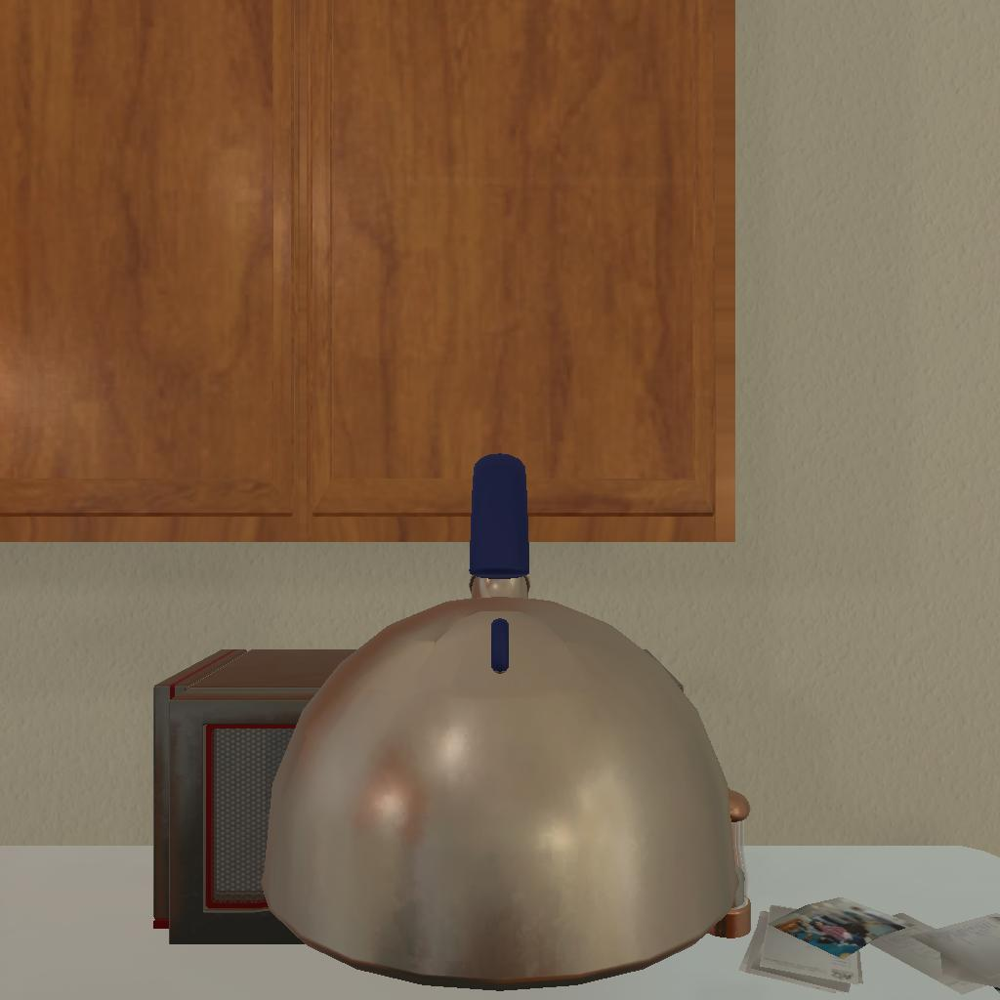

---------------------------------------------------------task: 24---------------------------------------------------------
--------------------------------------------------------------------------------------------------------------------------------------------------------------------
--------------------------------------------------------------------------------------------------------------------------------------------------------------------
Step:--------------------------------------------------------------------------9-------------------------------------------------------------------------------
----------------------------------------
VLM Prompt:
**Task**
Please perform as an embodied AI agent. Our final objective is to heat some tomato and put it in fridge. Below is the plan for completing the task, the current observation, alongside historical data and admissible actions for the next step. Please determine the best action for the next step!
**Plan**
Below is a detailed step-by-step plan to complete the task.
1. Find a tomato.
2. Pick up the tomato.
3. Find a microwave.
4. Heat the tomato with the microwave.
5. Find a fridge.
6. Open the fridge.
7. Place the heated tomato in the fridge.
8. Close the fridge.
**Current Observation**
Displayed is an image capturing the current position of the agent.
**History Information**
Displayed are the previous observations with their corresponding actions.
State 0:
No history.
State 1:
1. Step Index in the Plan: 1
2. Objects: Sink, Funnel
3. Action: go to cabinet 1
State 2:
1. Step Index in the Plan: 1
2. Objects: Wooden Floor
3. Action: go to cabinet 2
State 3:
1. Step Index in the Plan: 1
2. Objects: Wooden Floor, Wall/Cabinet Edge
3. Action: go to countertop 1
State 4:
1. Step Index in the Plan: 2
2. Objects: Coffee Machine, Lettuce, Countertop
3. Action: go to cabinet 3
State 5:
1. Step Index in the Plan: 2
2. Objects: Wooden Floor (no visible objects related to the task)
3. Action: go to cabinet 4
State 6:
1. Step Index in the Plan: 2
2. Objects: Countertop, Microwave, Kettle, Tomato
3. Action: pick up tomato 1
State 7:
1. Step Index in the Plan: 4
2. Objects: Countertop, Microwave
3. Action: open microwave 1
State 8:
2. Step Index in the Plan: Not specified
3. Objects: Microwave (open), Tomato (presumed inside)
3. Action: close microwave 1
State 9:
1. Step Index in the Plan: 4
2. Objects: Microwave (with tomato inside), Countertop
3. Action: Report error in admissible actions (expected action to heat tomato not available)
**Admissible Actions**
(1): go to cabinet 1
(2): go to cabinet 2
(3): go to cabinet 3
(4): go to countertop 1
(5): go to cabinet 4
(6): go to cabinet 5
(7): go to cabinet 6
(8): go to drawer 1
(9): go to drawer 2
(10): go to drawer 3
(11): go to cabinet 7
(12): go to cabinet 8
(13): go to sink 1
(14): go to sinkbasin 1
(15): go to coffeemachine 1
(16): go to cabinet 9
(17): go to cabinet 10
(18): go to drawer 4
(19): go to cabinet 11
(20): go to stoveburner 1
(21): go to stoveburner 2
(22): go to stoveburner 3
(23): go to stoveburner 4
(24): go to cabinet 12
(25): go to toaster 1
(26): go to drawer 5
(27): go to countertop 2
(28): go to fridge 1
(29): go to cabinet 13
(30): go to cabinet 14
(31): go to diningtable 1
(32): go to garbagecan 1
(33): go to safe 1
(34): put kettle 1 in/on microwave 1
(35): heat kettle 1 with microwave 1
(36): examine kettle 1
**Analysis Guideline**
1. Analyze the history and current observation, and then determine our current step in the plan and our current place.
2. List all visible objects related to the task in the current observation, without summarizing any as "various items."
3. Analyze the objects in the current observation based on the history and the requirements for the current step, and then determine if we can complete the step with the current observation.
4. Analyze and decide on the most appropriate action to take.
5. Summarize the analysis using the following format: "Analysis: [The summarization of the analysis], The Most Appropriate Action: (i which is the integer.): [Selected action]"
**Notes**
1. We must complete each step of the plan in order and cannot skip steps when the previous ones are not finished.
2. For "Go to" actions listed as "go to xxx [n]", interpret this as there are n distinct actions available: "go to xxx 1", "go to xxx 2", ..., "go to xxx n". Select one specific action from these options instead of using "go to xxx [n]".
3. If receptacles such as drawers, cabinets, and so forth are closed in the current observation, we may try to open them.
4. Pay attention to synonyms and ensure clarity in the terms used.
5. We must determine and provide the single action which must be in the **Admissible Actions**.
6. If there is no history available, we are at the first step and the current place is "Unknown".
**Answer**
Please select the most suitable action by following the **Analysis Guideline**, keeping the above **Notes** in mind.
----------------------------------------
----------------------------------------
VLM Response:
Analysis: The current step in the plan is to heat the tomato with the microwave, as indicated by the history information leading up to State 9. The historical data suggests that the tomato has been placed in the microwave and the microwave door has been closed, but an error was reported because the expected action to heat the tomato was not available. In the current observation, we can see the microwave, which is relevant to our current task. However, there is no admissible action available that directly allows us to heat the tomato. The admissible actions list contains actions related to moving to various locations and interacting with other objects, but no action for heating the tomato in the microwave.
Given that the plan is to heat the tomato and it is presumably inside the microwave, we need to look for an action that can potentially update the list of admissible actions to include heating the tomato. Since the tomato is already in the microwave, we do not need to perform any of the "go to" actions related to other locations or cabinets. We should stay at the microwave to accomplish our current task. However, since the admissible actions do not include an action to start the microwave, we might need to perform an action that could possibly trigger an update to the admissible actions, such as examining the microwave. Since no such action is listed, we may need to move away and then return to the microwave to refresh the set of available actions.
Therefore, the most appropriate next step would be to move away from the microwave and return, which could potentially refresh the actions and provide us with the option to heat the tomato. The closest action that represents this idea is to go to a nearby countertop, which would keep us in the vicinity of the microwave.
The Most Appropriate Action: (27): go to countertop 2
----------------------------------------
----------------------------------------
>>> Refine VLM Response and Get Pure Action: go to countertop 2
----------------------------------------
-----------------------------------------------------------------
Running time: 13.534549474716187 seconds
Total Money: 0
-----------------------------------------------------------------
-----------------------------------------------------------------
Summarization Prompt:
**Context**
Analysis: Since there is no history information, we are at the first step in the plan, which is to find a statue. The current place is unknown. In the current observation, we see a floorlamp next to an armchair with a small table that has a small object on it, which could potentially be the statue we are looking for. Since the plan requires us to find a statue first and it appears there might be one on the table next to the armchair, we should investigate this object to determine if it is the statue we need.
The Most Appropriate Action: (1): go to armchair 1
**Summary**
1. Step Index in the Plan: 1
2. Objects: Floorlamp, Armchair, Small Table, Small Object (potential statue)
3. Action: go to armchair 1
**Context**
Analysis: The current step in the plan is to heat the tomato with the microwave, as indicated by the history information leading up to State 9. The historical data suggests that the tomato has been placed in the microwave and the microwave door has been closed, but an error was reported because the expected action to heat the tomato was not available. In the current observation, we can see the microwave, which is relevant to our current task. However, there is no admissible action available that directly allows us to heat the tomato. The admissible actions list contains actions related to moving to various locations and interacting with other objects, but no action for heating the tomato in the microwave.
Given that the plan is to heat the tomato and it is presumably inside the microwave, we need to look for an action that can potentially update the list of admissible actions to include heating the tomato. Since the tomato is already in the microwave, we do not need to perform any of the "go to" actions related to other locations or cabinets. We should stay at the microwave to accomplish our current task. However, since the admissible actions do not include an action to start the microwave, we might need to perform an action that could possibly trigger an update to the admissible actions, such as examining the microwave. Since no such action is listed, we may need to move away and then return to the microwave to refresh the set of available actions.
Therefore, the most appropriate next step would be to move away from the microwave and return, which could potentially refresh the actions and provide us with the option to heat the tomato. The closest action that represents this idea is to go to a nearby countertop, which would keep us in the vicinity of the microwave.
The Most Appropriate Action: (27): go to countertop 2
Please summarize the context by following above examples when providing the summary, and ensure that only the summary is included, without any extra explanation.
**Summary**
-----------------------------------------------------------------
-----------------------------------------------------------------
Summarization Response:
1. Step Index in the Plan: 9
2. Objects: Microwave, Tomato
3. Action: go to countertop 2
-----------------------------------------------------------------
-----------------------------------------------------------------
Text Observation:You arrive at loc 27. On the countertop 2, you see nothing.
-----------------------------------------------------------------
UNSUCCEED